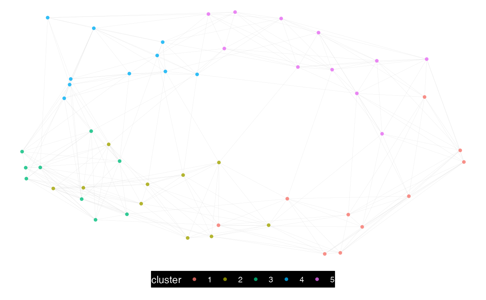

Implement the Louvain community detection on a Person to Person network query
Source:R/network_louvain.R
network_louvain.Rd![[Experimental]](figures/lifecycle-experimental.svg)
Take a P2P network query and implement the Louvain community detection method. The 'igraph' implementation of the Louvain method is used.
network_louvain(
data,
hrvar = "Organization",
bg_fill = "#000000",
font_col = "#FFFFFF",
node_alpha = 0.8,
algorithm = "mds",
path = "network_p2p_louvain",
desc_hrvar = c("Organization", "LevelDesignation", "FunctionType"),
return = "plot-louvain",
size_threshold = 5000
)Arguments
- data
Data frame containing a person-to-person query.
- hrvar
String containing the label for the HR attribute.
- bg_fill
String to specify background fill colour.
- font_col
String to specify font and link colour.
- node_alpha
A numeric value between 0 and 1 to specify the transparency of the nodes. Defaults to 0.7.
- algorithm
String to specify the node placement algorithm to be used. Defaults to
"mds"for the deterministic multi-dimensional scaling of nodes. See https://rdrr.io/cran/ggraph/man/layout_tbl_graph_igraph.html for a full list of options.- path
File path for saving the PDF output. Defaults to a timestamped path based on current parameters.
- desc_hrvar
Character vector of length 3 containing the HR attributes to use when returning the
"describe"output. Seenetwork_describe().- return
String specifying what output to return. Defaults to "plot-louvain". Valid return options include:
'plot-louvain': return a network plot coloured by Louvain communities, saving a PDF to path.'plot-hrvar': return a network plot coloured by HR attribute, saving a PDF to path.'plot-sankey': return a sankey plot combining communities and HR attribute.'table': return a vertex summary table with counts in communities and HR attribute.'data': return a vertex data file that matches vertices with communities and HR attributes.'describe': return a list of data frames which describe each of the identified communities. The first data frame is a summary table of all the communities.'network': return 'igraph' object.
- size_threshold
Numeric value representing the maximum number of edges before
network_leiden()switches to use a more efficient, but less elegant plotting method (native igraph). Defaults to 5000. Set as0to coerce to a fast plotting method every time, andInfto always use the default plotting method (with 'ggraph').
Value
See return.
See also
Other Network:
external_network_plot(),
g2g_data,
internal_network_plot(),
network_describe(),
network_g2g(),
network_leiden(),
network_p2p(),
network_summary(),
p2p_data_sim()
Examples
# Simulate a small person-to-person dataset
p2p_data <- p2p_data_sim(size = 50)
# Return louvain, console, plot
p2p_data %>%
network_louvain(path = NULL,
return = "plot")
